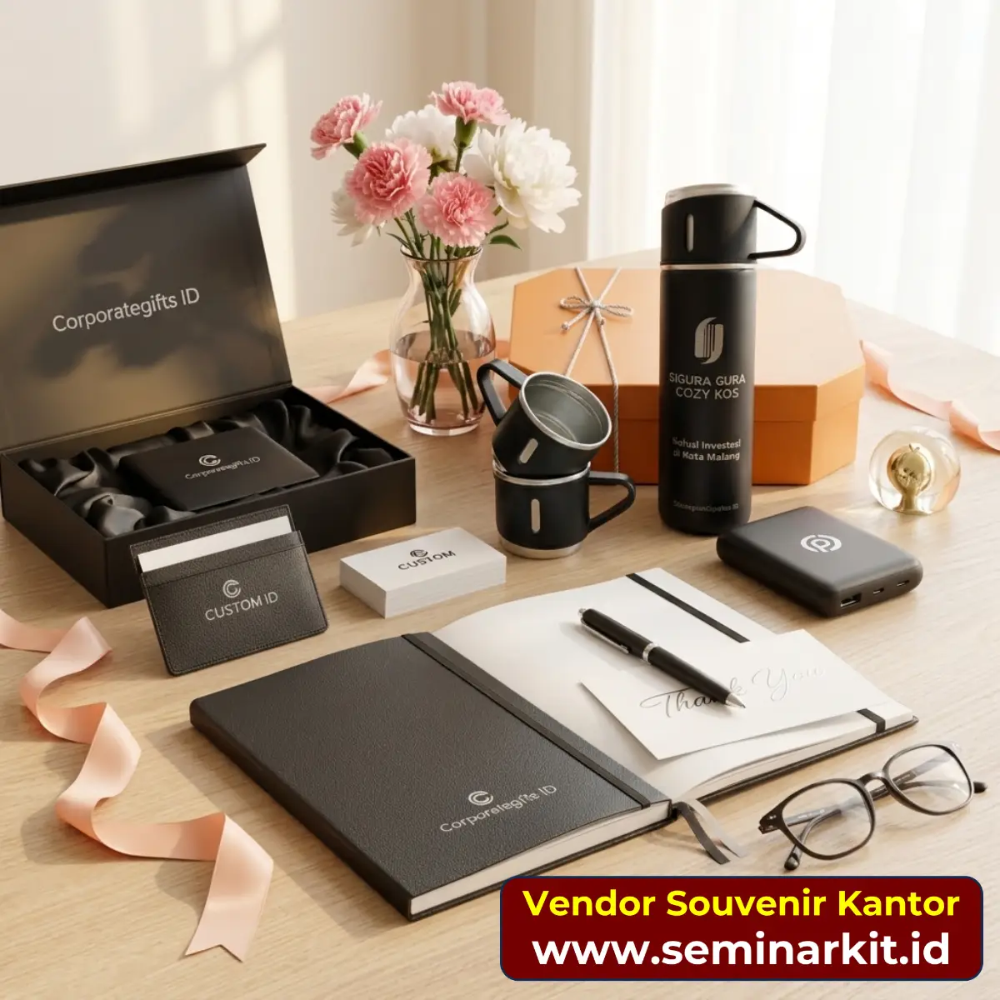

Dalam pengadaan souvenir kantor, ketepatan waktu sering lebih menentukan daripada selisih harga kecil antar vendor. Souvenir yang datang terlambat dapat mengganggu agenda event, merusak ritme distribusi onboarding kit, dan menambah tekanan bagi tim internal yang sudah mengejar banyak target sekaligus. Itulah sebabnya lead time tidak boleh dianggap sebagai urusan vendor semata. Perusahaan dan vendor harus mengelolanya sebagai tanggung jawab bersama dari hari pertama project dimulai.
Banyak kasus keterlambatan sebenarnya bisa diprediksi. Polanya hampir selalu berulang: brief belum final, approval desain lama, sample terlambat disetujui, lalu produksi massal dikejar mendekati deadline. Ketika waktu tersisa sedikit, satu gangguan kecil seperti kekurangan material atau kendala kurir bisa langsung berdampak besar. Karena itu, strategi terbaik adalah membangun sistem pencegahan, bukan menunggu masalah lalu mencari solusi darurat.
Panduan ini membahas langkah-langkah praktis yang bisa langsung diterapkan tim purchasing, HR, GA, dan marketing agar timeline souvenir kantor tetap aman. Seluruh poin disusun untuk kebutuhan operasional nyata, terutama project yang melibatkan banyak approval internal dan distribusi ke lebih dari satu lokasi.
Kunci Awal: Finalisasi Brief Secepat Mungkin
Lead time yang sehat selalu dimulai dari brief yang jelas. Brief minimum sebaiknya mencakup jenis produk, estimasi kuantitas, spesifikasi branding, target tanggal barang diterima, dan skema distribusi. Tanpa informasi ini, vendor hanya bisa memberi timeline asumtif yang mudah berubah. Setiap perubahan detail di tengah jalan akan membuat fase berikutnya ikut mundur.
Jika Anda bekerja dengan banyak stakeholder internal, buat sesi sinkronisasi singkat sebelum brief dikirim ke vendor. Tujuannya menyatukan ekspektasi sejak awal dan mengurangi risiko revisi mayor di fase desain. Satu jam sinkronisasi internal sering lebih berharga daripada tiga hari revisi bolak-balik setelah project berjalan.
Pada tahap ini, tim juga perlu menentukan prioritas yang tidak bisa ditawar, misalnya tanggal distribusi, standar kualitas cetak logo, atau jenis material tertentu. Prioritas ini akan membantu vendor mengajukan alternatif yang tepat jika muncul kendala supply chain.
Bagi Project Menjadi Milestone yang Bisa Diukur
Timeline yang hanya berisi tanggal akhir hampir pasti berisiko. Pecah project menjadi milestone: final brief, mockup desain, sample approval, produksi massal, quality control, packing, dan pengiriman. Setiap milestone harus punya tanggal target dan penanggung jawab. Dengan cara ini, keterlambatan bisa terdeteksi lebih cepat sebelum berubah menjadi krisis.
Milestone juga memudahkan komunikasi lintas tim. Finance tahu kapan PO harus final. Tim event tahu kapan barang mulai bisa didistribusikan. Vendor tahu kapan keputusan desain harus sudah terkunci. Saat semua pihak membaca peta waktu yang sama, koordinasi jauh lebih efisien.
Timeline yang aman bukan timeline paling cepat, melainkan timeline yang realistis, terukur, dan memiliki ruang mitigasi.
Tata Kelola Approval agar Tidak Menjadi Bottleneck
Di banyak perusahaan, tahap approval adalah titik paling rawan keterlambatan. Masukan datang dari banyak pihak, tetapi tidak ada PIC yang menyatukan keputusan. Akibatnya vendor menerima revisi bertahap yang saling bertentangan. Untuk mencegah hal ini, tetapkan satu PIC approval dari sisi klien yang berwenang memfinalkan masukan.
Batas revisi juga perlu disepakati sejak awal. Misalnya dua kali revisi minor untuk desain dan satu kali final approval sample. Batas ini bukan untuk membatasi kreativitas, melainkan menjaga ritme project tetap terkendali. Revisi tanpa batas hampir selalu menggerus waktu produksi.
Jika manajemen puncak harus ikut approve, jadwalkan sesi review mereka lebih awal. Jangan menunggu semua detail selesai baru diajukan, karena revisi dari level pengambil keputusan biasanya berdampak besar.
Percepat Sample Approval dengan Parameter Objektif
Sample approval sering memakan waktu lama karena tim menilai dengan kriteria yang berbeda-beda. Solusinya, gunakan checklist objektif: akurasi warna logo, ketajaman cetak, kualitas material, kerapian finishing, dan fungsi produk. Checklist ini membuat diskusi lebih cepat karena setiap catatan berbasis parameter yang sama.
Pastikan hasil sample terdokumentasi dengan jelas melalui foto, catatan revisi, dan status approval tertulis. Dokumentasi ini penting saat produksi massal dimulai agar tidak ada perbedaan interpretasi antara pihak klien dan vendor. Jika project bernilai besar, minta vendor menyertakan sample lock sebagai acuan mutu.
Satu kebiasaan baik yang sering membantu adalah memberikan deadline internal untuk approval sample, misalnya maksimal dua hari kerja setelah sample diterima. Deadline internal menjaga tim tetap responsif.

Mitigasi Risiko Material dan Kapasitas Produksi
Keterlambatan tidak selalu berasal dari proses internal. Risiko eksternal seperti keterbatasan material atau lonjakan permintaan musiman juga bisa memengaruhi timeline. Karena itu, tanyakan sejak awal apakah material utama ready stock, berapa kapasitas produksi vendor per minggu, dan apa rencana cadangan jika ada kendala pasokan.
Vendor berpengalaman biasanya menyiapkan opsi material setara tanpa mengorbankan fungsi utama produk. Informasi ini sangat berharga ketika Anda perlu mengambil keputusan cepat. Daripada menunggu material tertentu yang belum pasti, tim bisa memilih opsi setara dengan dampak waktu yang lebih aman.
Jika project memiliki banyak SKU sekaligus, pertimbangkan prioritas produksi berdasarkan item kritikal. Item dengan proses branding paling kompleks sebaiknya diproduksi lebih awal karena memiliki risiko delay lebih besar.
Quality Control dan Packing sebagai Penjaga Waktu
Sebagian tim menganggap quality control hanya urusan mutu, padahal QC yang buruk dapat memperlambat pengiriman secara signifikan. Cacat produksi yang ditemukan di akhir proses akan memicu rework dan menggeser timeline. Untuk mencegahnya, minta vendor melakukan checkpoint QC saat produksi berjalan, bukan hanya di tahap akhir.
Pada fase packing, gunakan kode batch atau label per paket agar proses sortir lebih cepat. Hal ini sangat membantu jika project mencakup beberapa kategori penerima atau lokasi kirim berbeda. Struktur packing yang rapi mengurangi risiko salah kirim yang bisa menambah waktu koreksi.
Dokumentasi foto saat QC dan packing juga berguna untuk audit internal perusahaan. Selain memperkuat akuntabilitas vendor, dokumentasi ini memudahkan tim menjawab pertanyaan stakeholder jika terjadi isu setelah distribusi.
Rancang Distribusi dari Awal, Jangan di Ujung Timeline
Distribusi adalah fase yang sering diremehkan. Tim terlalu fokus pada produksi, lalu baru memikirkan pengiriman saat barang hampir selesai. Akibatnya, data alamat belum siap, PIC penerima belum valid, dan jadwal kurir menjadi tidak optimal. Untuk project multi kota, dampaknya bisa sangat besar.
Siapkan daftar penerima, alamat, nomor kontak, dan prioritas pengiriman sejak fase produksi. Jika perlu, lakukan validasi data dua kali untuk mengurangi retur. Bagi perusahaan dengan banyak cabang, model pengiriman bertahap sering lebih aman daripada menunggu semua paket selesai sekaligus.
Untuk event dengan tanggal tetap, targetkan seluruh barang sudah diterima minimal H-7. Buffer ini memberi waktu jika ada kendala transit atau kebutuhan koreksi minor.

Monitoring Harian Ringan, Dampaknya Besar
Anda tidak perlu rapat panjang setiap hari untuk menjaga timeline. Cukup gunakan update status singkat dengan format tetap: progres, risiko, tindakan perbaikan, dan kebutuhan keputusan dari klien. Dengan ritme komunikasi konsisten, hambatan bisa diatasi sebelum menjadi keterlambatan.
Gunakan dashboard sederhana yang mencatat tanggal target dan aktual setiap milestone. Warna status hijau, kuning, merah cukup efektif untuk membantu manajemen membaca kondisi project dalam hitungan detik. Saat satu tahap berubah menjadi kuning, tim bisa segera mengambil tindakan sebelum berubah merah.
Disiplin monitoring seperti ini menciptakan budaya kerja yang lebih prediktif. Bukan lagi menunggu kejutan di akhir, tetapi mengelola risiko sejak dini.
Kesalahan Klasik yang Membuat Lead Time Mundur
Ada beberapa kesalahan yang terus berulang dalam project souvenir kantor: brief dikirim setengah jadi, approval tanpa PIC tunggal, revisi desain tidak dibatasi, data distribusi disiapkan terlalu akhir, dan tidak ada buffer waktu. Kesalahan ini terlihat kecil, tetapi jika terjadi bersamaan dampaknya bisa menggagalkan jadwal event.
Menariknya, semua kesalahan tersebut bisa dicegah dengan SOP sederhana. Buat checklist awal project, timeline milestone, format update mingguan, dan template approval. Dengan SOP, kualitas eksekusi tidak tergantung pada satu orang tertentu dan tetap konsisten di project berikutnya.

Klik gambar untuk konsultasi timeline produksi souvenir kantor atau ingin order Jasa Pembuatan Website Usaha Souvenir Kantor.
Kesimpulan
Menjaga lead time produksi souvenir kantor bukan soal kerja cepat semata, tetapi soal kerja terstruktur. Finalisasi brief, milestone jelas, approval disiplin, mitigasi risiko material, dan distribusi yang dirancang sejak awal adalah kombinasi yang paling efektif untuk mencegah keterlambatan. Ketika semua komponen ini berjalan sinkron, tim internal bisa bekerja dengan tenang dan event berjalan sesuai rencana.
Jika perusahaan Anda rutin menyelenggarakan event, jadikan pengelolaan lead time sebagai standar operasional. Pendekatan ini membantu menurunkan risiko darurat di menit akhir, meningkatkan kualitas kolaborasi vendor-klien, dan menjaga kepercayaan stakeholder terhadap tim pengadaan.
FAQ Seputar Lead Time Produksi Souvenir Kantor
Berapa buffer waktu aman sebelum event?
Targetkan seluruh barang sudah diterima minimal H-7 agar masih ada ruang jika terjadi kendala logistik atau koreksi minor.
Apakah sample approval selalu wajib?
Untuk project perusahaan, sample approval sangat disarankan karena mengurangi risiko ketidaksesuaian saat produksi massal.
Siapa yang sebaiknya menjadi PIC approval?
Satu orang yang punya kewenangan menggabungkan masukan lintas tim dan mengambil keputusan final secara cepat.
Bagaimana mengurangi revisi berulang?
Gunakan checklist kriteria desain sejak awal, lalu batasi siklus revisi agar semua pihak fokus pada keputusan yang benar-benar penting.
Apa indikator timeline production dianggap sehat?
Setiap milestone tercapai mendekati target, deviasi kecil terkendali, dan distribusi selesai sebelum tenggat utama acara.